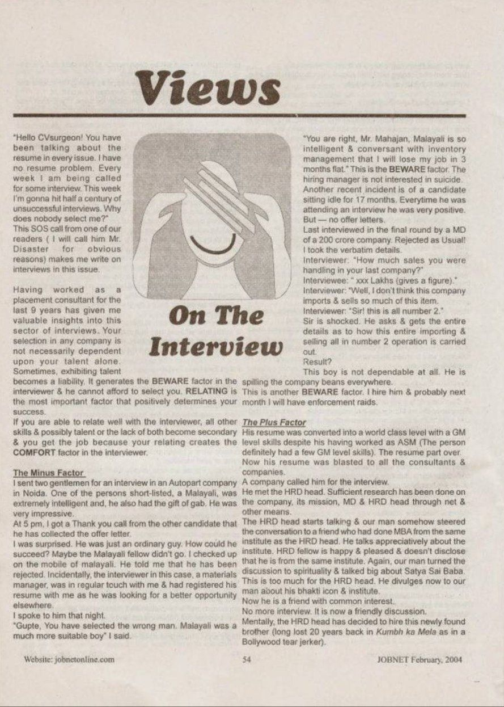
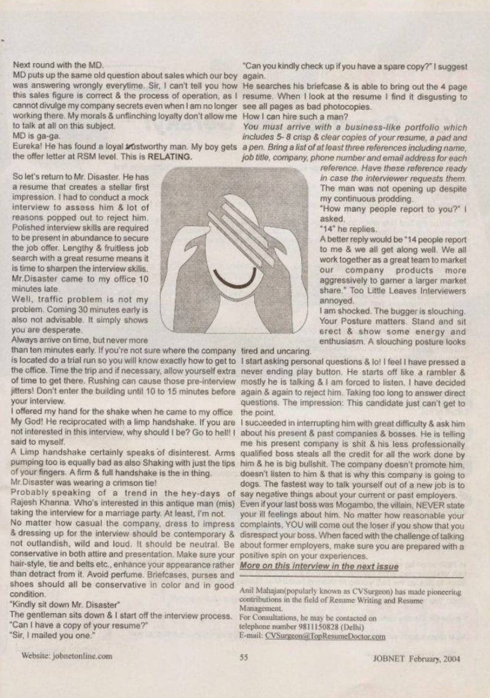

JOBNET Career Intelligence
Beyond Questions and Answers — Understanding the Purpose of an Interview
About This Article
In this insightful article, Anil Mahajan presented a different perspective on interviews. Rather than viewing them as stressful question-and-answer sessions, he encouraged professionals to see interviews as opportunities to demonstrate competence, confidence, character and business value.
The article explored how preparation, communication, attitude and professional presence influence hiring decisions just as much as technical knowledge.
Original Publication
Scanned pages from the original printed publication.

JOBNET February 2004 — Page 1

JOBNET February 2004 — Page 2
Article Transcript
Originally published in JOBNET — February 2004
"Hello CVsurgeon! You have been talking about the resume in every issue. I have no resume problem. Every week I am being called for some interview. This week I'm gonna hit half a century of unsuccessful interviews. Why does nobody select me?" This SOS call from one of our readers (I will call him Mr. Disaster for obvious reasons) makes me write on interviews in this issue.
Having worked as a placement consultant for the last 9 years has given me valuable insights into this sector of interviews. Your selection in any company is not necessarily dependent upon your talent alone. Sometimes, exhibiting talent becomes a liability.
The Negative
The BEWARE Factor
It generates the BEWARE factor in the interviewer — and he cannot afford to select you. Displaying excessive talent or exposing company secrets signals a threat rather than an asset.
The Positive
The RELATING Factor
RELATING is the most important factor that positively determines your success. If you are able to relate well with the interviewer, all other skills become secondary — you get the job because your relating creates the COMFORT factor.
Case Study 1
I sent two gentlemen for an interview at an Autopart company in Noida. One of the persons shortlisted, a Malayali, was extremely intelligent and had the gift of gab. He was very impressive. At 5 pm, I got a thank you call from the other candidate — he had collected the offer letter.
I was surprised. He was just an ordinary guy. I spoke to the interviewer that night. "Gupte, you have selected the wrong man. Malayali was a much more suitable boy." "You are right, Mr. Mahajan — Malayali is so intelligent and conversant with inventory management that I will lose my job in 3 months flat." This is the BEWARE factor. The hiring manager is not interested in suicide.
Another recent incident: a candidate sitting idle for 17 months. In the final round, interviewed by an MD of a 200-crore company. When asked about his sales figures, he revealed the entire number 2 operation of his previous company in graphic detail. Result? "This boy is not dependable at all. He is spilling the company beans everywhere. I hire him and probably next month I will have enforcement raids."
Case Study 2
The same candidate's resume was converted to world-class level. He met the HRD head. Sufficient research had been done on the company, its mission, the MD and the HRD head through the net and other means.
He steered the conversation to a mutual friend from the HRD head's MBA institute. He talked appreciatively about the institute, then turned the discussion to spirituality. The HRD head divulged his own spiritual connection. Now he was a friend with common interests. No more interviews — it was now a friendly discussion. The HRD head had mentally decided to hire this newly found "long-lost brother."
Eureka! Offer letter at RSM level. This is RELATING.
The Mr. Disaster Analysis
Mr. Disaster has a resume that creates a stellar first impression. But a lot of reasons to reject him popped out during the mock interview. Polished interview skills are required in abundance to secure the job offer. Lengthy and fruitless job search with a great resume means it is time to sharpen interview skills.
Then & Now
The interview process has changed dramatically since this article first appeared. Today's organisations often evaluate candidates through multiple stages — and the interview is no longer only about qualifications.
Interview stages today
What organisations evaluate
Executive interviews are now conversations designed to understand how a leader thinks, solves problems and creates organisational value — not merely what appears on a resume.
The Modern Process
Each stage examines a different dimension of leadership capability.
Professional Profile Review
AI / ATS Screening
Recruiter Conversation
Functional Interview
Leadership Assessment
Business Case / Strategic Discussion
CXO / CEO Interview
Board or Final Selection
How the Concept Has Evolved
Then — 2004
Today — 2026
Key Takeaways
Practical Advice
A successful interview today is built on preparation, authenticity and the ability to communicate impact with clarity.
Looking Ahead
Technology will continue to transform recruitment, but interviews will remain fundamentally human. While AI may shortlist candidates, the final hiring decision is still based on trust, credibility, leadership potential and the confidence a candidate inspires.
That central message of Views on the Interview remains timeless.
About the Author
Continue Reading